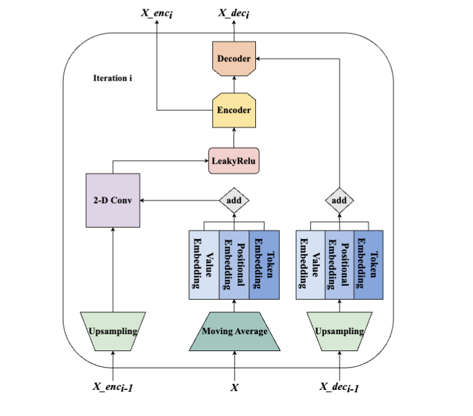
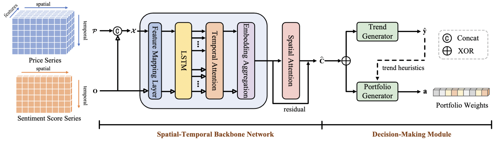
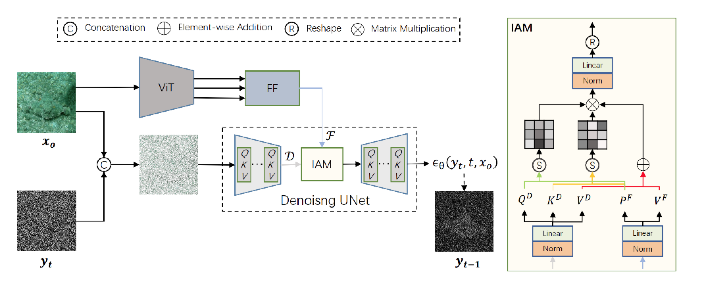
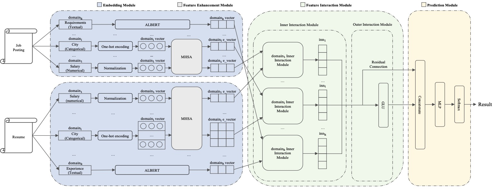
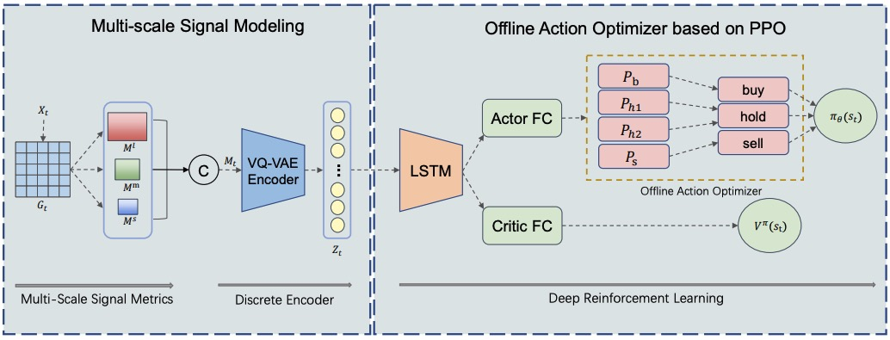
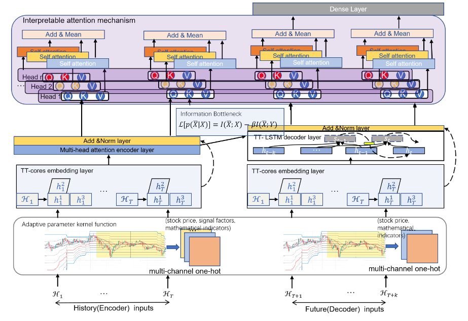
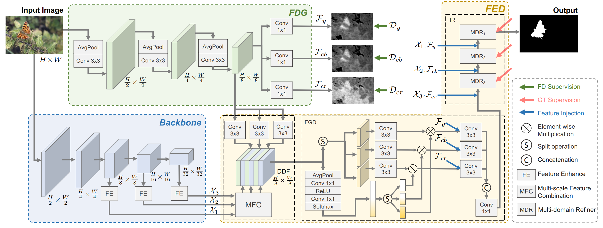

|
M.S at Xiamen University
|
|
I am currently a third-year master student at Xiamen University, supervised by Associate Professor Fan Lin.
My research interests include computer vision, deep reinforcement learning. Specifically focus on the following aspects:
* Eauql contribution. ✉ Corresponding author.
| 06 | Hanpeng Jiang*, Zhennan Chen*, Wei Ding, Fan Lin✉
ASFORMER: LEARNING FROM ADJACENT SCALE IEEE International Conference on Acoustics, Speech and Signal Processing (ICASSP), 2024 [pdf coming] |
| 05 | Wei Ding*, Zhennan Chen*, Hanpeng Jiang, YuanguoLin, Fan Lin✉
TREND-HEURISTIC REINFORCEMENT LEARNING FRAMEWORK FOR NEWS-ORIENTED STOCK PORTFOLIO MANAGEMENT IEEE International Conference on Acoustics, Speech and Signal Processing (ICASSP), 2024 [pdf coming] |
| 04 | Zhennan Chen, Rongrong Gao, Tian-Zhu Xiang✉, Fan Lin✉
Diffusion Model for Camouflaged Object Detection European Conference on Artificial Intelligence (ECAI) (Oral), 2023 [PDF] |
| 03 | Bin Li, Jianwen Ding, Zhennan Chen, Hanpeng Jiang, Fan Lin✉
Multi-Domain Feature Representation and Multi-Dimensional Feature Interaction for Person-Job Fit International Conference on Software Engineering & Knowledge Engineering (SEKE), 2023 [PDF] |
| 02 | Zhennan Chen, Zhicheng Zhang, Pengfei Li, Shibo Feng, Fan Lin✉
mTrader: A Multi-Scale Signal Optimization Deep Reinforcement Learning Framework for Financial Trading International Conference on Software Engineering & Knowledge Engineering (SEKE), 2023 [PDF] |
| 01 | Fan Lin, Pengfei Li, Yuanguo Lin✉, Zhennan Chen, Huanyu You, Shibo Feng
Kernel-based Hybrid Interpretable Transformer for High-frequency Stock Movement Prediction IEEE International Conference on Data Mining (ICDM), 2022 [PDF] |
| 01 | Zhennan Chen, Shuo Wang, Xuying Zhang, Rongrong Gao, Tian-Zhu Xiang✉, Fan Lin✉
Adaptive Guidance Learning for Camouflaged Object Detection [pdf coming] |